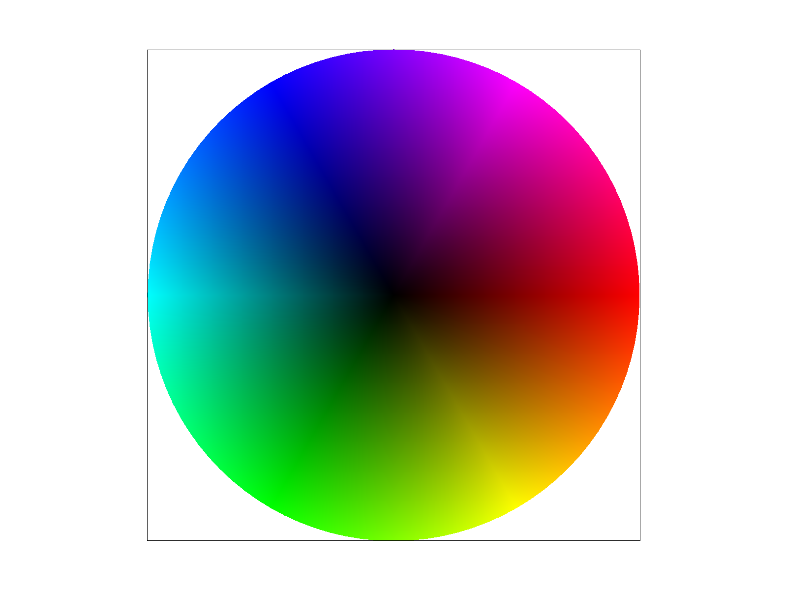

CS184/284A Spring 2025 Homework 1 Write-Up
Link to webpage: (TODO) github.com/cal-cs184-student/sp25-hw1-triangles-1
Link to GitHub repository: (TODO) cs184.eecs.berkeley.edu/sp25
Overview
Give a high-level overview of what you implemented in this homework. Think about what you've built as a whole. Share your thoughts on what interesting things you've learned from completing the homework.Task 1: Drawing Single-Color Triangles
My triangle rasterization algorithm begins by computing the bounding box of a triangle. The bounding box is the smallest axis-aligned rectangle that completely encloses the triangle and is obtained by taking the minimum and maximum x and y coordinates among the triangle's vertices. By restricting the pixel tests to only those within this rectangle, the algorithm avoids unnecessary computations.
For each pixel within the bounding box, I sample the pixel center (e.g., at (x + 0.5, y + 0.5)) and evaluate three edge equations, one for each triangle edge. Each edge equation, derived from the line through two vertices, indicates which side of the edge a point lies on. I then combine these tests using a counterclockwise check to determine if the sample lies within the triangle, regardless of the vertex order. Admittedly, there was a bug in my code, which led to issues with Task 4, as mentioned later.
The method used in this task is efficient because it only examines pixels in the minimal region necessary to cover the triangle, and its performance is comparable to checking every sample within the bounding box. By limiting our evaluation to this constrained area, we significantly reduce the number of unnecessary pixel tests, which improves overall rendering speed. Furthermore, the use of edge function evaluations--each operating in constant time--ensures that our approach scales gracefully even as triangle complexity increases, making it well-suited for real-time applications.

Task 2: Antialiasing by Supersampling
To reduce aliasing and improve image quality, I extended the rasterization pipeline to use supersampling. Supersampling divides each pixel into a grid of subpixels--such as a 2x2 grid for a sample rate of 4 or a 4x4 grid for a sample rate of 16--so that multiple color samples are taken within each pixel.
I modified the sample buffer to hold width x height x sample_rate color samples, ensuring each pixel stores all its subpixel colors. In the triangle rasterization routine, instead of testing a single point per pixel, I iterate over the subpixel grid, testing the center of each subpixel using the same edge equations from Task 1. If a subpixel is covered by the triangle, its corresponding sample is set to the triangle's color.
After all primitives are rasterized, the resolve_to_framebuffer() function averages the subpixel colors for each pixel to compute
the final displayed color. This averaging process smooths out jagged edges, as the pixel's final color reflects a blend of both fully and
partially covered subpixels.
Task 3: Transforms
For Task 3, I implemented three fundamental 2D transformation functions--translate, scale, and rotate--in homogeneous coordinates, which are represented as 3x3 matrices. This allows for a unified method of performing affine transformations on 2D points (represented as (x, y, 1)).
The translate(dx, dy) function returns a matrix that moves an object by dx in the x-direction and dy in the y-direction:
\[
T = \begin{bmatrix} 1 & 0 & dx \\ 0 & 1 & dy \\ 0 & 0 & 1 \end{bmatrix}
\]
The scale(sx, sy) function returns a matrix that scales an object by factors of sx and sy along the x and y axes respectively:
\[
S = \begin{bmatrix} sx & 0 & 0 \\ 0 & sy & 0 \\ 0 & 0 & 1 \end{bmatrix}
\]
The rotate(deg) function converts an angle from degrees to radians and returns a matrix that rotates an object counterclockwise
about the origin:
\[
R = \begin{bmatrix} \cos\theta & -\sin\theta & 0 \\ \sin\theta & \cos\theta & 0 \\ 0 & 0 & 1 \end{bmatrix}
\]
where \( \theta = \text{deg} \times \pi / 180 \).
Using these transformation functions, I updated the original robot.svg. In my updated version, saved as my_robot.svg,
I changed the color scheme to blue and modified both arms so that they appear to be waving. In this version, both arms have been transformed via the
transform attribute, demonstrating hierarchical transformation: each limb is independently rotated and translated while maintaining its
relationship with the body.
Task 4: Barycentric Coordinates
|
|

|
Overview: Barycentric coordinates are a three-coordinate system for triangles that describe a given point within the triangle with the points (alpha, beta, gamma). Notably, this system allows us to interpolate values (given by the values at the vertex of a triangle) throughout the triangle to smoothly blend the values.
For any given point, let \( V \) be the interpolated value inside a triangle with vertices \( A, B, C \). If \( V_A, V_B, \) and \( V_C \) represent the values at each vertex, we can compute \( V \) as:
\[ V = \alpha V_A + \beta V_B + \gamma V_C \]
Equation 1
Then V is a value that appropriately weights the value at each vertex. If we do this for every point within the triangle, we can properly interpolate a given value throughout the triangle. In Figure 1, each vertex has a color (pink, yellow, blue). For each point within the triangle, I calculate the alpha, beta, and gamma values and use these values to interpolate the color for that point. By inspection, you will notice that points closer to a vertex more strongly exhibit the color for that vertex. By contrast, points that are at a midpoint between vertices exhibit more blending. A key example of this is the midpoint of the triangle, which weighs the value of each vertex evenly, creating a grey-ish color.
Figure 2 is a color wheel made up of several smaller triangles, which interpolate the colors at the vertices to smoothly blend color throughout the wheel. Initially, I had a bug where a white line appeared on the color wheel. Despite finding an ed thread with a similar problem, I was unable to fix the issue on my own and went to office hours. Through OH, I realized there was a bug in Task 1, where I was not checking whether the line equations were equal to zero in the counter clockwise case, I was only checking equality for clockwise. This led to a thin white line in the color wheel. Once I added equality conditions for both cases, the line disappeared.
Task 5: "Pixel sampling" for texture mapping
Overview: Though barycentric interpolation is useful, it is a linear function. Perspective itself is not linear (note how items closer to you appear larger, but items further away appear smaller). Due to this, when we map textures, we get a better result from sampling nearby pixels to fill in "gaps" in the texture. For this project, we explored two types of pixel sampling methods:
Nearest Neighbor: The perhaps more naive method is to find the nearest texel (discrete coordinates in the texture) and sample from that point. Given the (u, v) coordinates of a potentially continuous point, we scale this by the width and height of the mipmap and then round this value to find the nearest discrete coordinates. Given this discrete coordinate, we can sample from the mipmap at those coordinates and use the coordinate at that texel.
Bilinear: This method examines the four nearest texels in our mipmap and interpolates them relative to our given (u, v) coordinate to find an appropriate color. The interpolation process involves two horizontal linear interpolations (one between the top two texels and one between the bottom two texels). The results of these two lerps, x1 and x2 respectively, is a final vertical linear interpolation between x1 and x2. The final result weights colors of the four nearest neighbors relative to our (u, v) coordinates.
|
|
|
|
|
|
In general, bilinear sampling performs better in areas of high contrast and detail. Nearest neighbor often results in blocky or jagged images. In the images above, you can see that the shadow of the clock on the campanile is represented differently in figure 1 (nearest neighbor) than figure 2 (bilinear). In the bilinear representation, there is a line of pixels distinguishing the clock hand from the shadow. However, in the nearest neighbor image, the clock hand and shadow begin to blur together at the end and there are some dark grey pixels from the shadow which mix in with the blue pixels from the clock itself.
Higher sampling rates are another method to smooth out images. For both nearest neighbor and bilinear, the image smooths out at higher sampling rates, improving the transition between high contrast areas. However, the nearest neighbor image (figure 3) still struggles with a blending of the clock hang, shadow, and lines from the bricks. In figure 4, these areas of contrast appear clearer and the clock hand and shadow remain separated.
Task 6: "Level Sampling" with mipmaps for texture mapping
Overview: Level sampling uses mipmap, which is an array of pre-computed lower resolutions of textures. Each texture decreases in quality by a factor of 2 (ex: if level 0 is 64 x 64, level 1 will be 32 x 32). This becomes useful as we are able to choose which level to sample from depending on the scene we are rendering. If we are rendering an image that has foreground (close to the observer) then we are magnifying our texture which entails a single texel sample to render multiple pixels. A similar challenge is encountered if we are minifying our texture (multiple texels map to a single pixel). In both these cases, the transformation between texture space and screen space are relatively large as we're mapping multiple samples to one sample. In situations like these, it would be useful to use a blurred texture to make our transitions smoother and blend well. When choosing what level to sample, we would want to sample from a higher level because higher levels, due to their lower resolution, blur the texture more.
Alternatively, if we have minimal magnification/minification then there is only a small change in texture space, and whatever transformations occur between screen space and texture space is relatively small (especially compared to our earlier case). Then in the case of minimal transformations, it makes more sense to sample from a lower mipmap level, because we want to preserve detail from our texture.
Implementation: There were three cases for selecting appropriate levels
- If the level sampling method was L_ZERO, we sampled from the 0th level mipmap, which is the original resolution.
-
f the level sampling method was L_NEAREST, then we computed the nearest mipmap level to sample from. To find the nearest mipmap level for a given point (x, y), we look at the nearest neighbors in screen space, which will be (x+1, y) and (x, y+1). When these coordinates are shifted to UV, we are essentially changing the coordinate system, meaning a transformation is taking place. To understand this transformation, we can compute the partial derivatives of the UV coordinates at the given points. We can take the partial derivatives du/dx, dv, dx to understand horizontal change and du/dy, dv/dy to understand vertical change. However, computing the barycentric UV coordinates of (x, y), (x + 1, y) and (x, y + 1) allows us to understand how these points map to the texture space, which aligns with the partial derivatives just discussed.
Given the UV coordinates of these points, we can calculate the difference vectors between our original point (x, y) and our nearest points: (x, y + 1) and (x + 1, y). Given these two vectors, we calculate the euclidian norm of each vector, and assign L to be the largest vector. L tells us how much our texture is magnifying or minifying at a given point, so then the appropriate mipmap level with be log base 2 of L; we utilize log base 2 because mipmaps decrease in resolution by a factor of 2.
- If the level sampling method is L_LINEAR, then we want to interpolate between two mipmap levels. We can do this by using D (as calculated in part 2) to sample from the level below D (floor) and the level above D (ceil). To properly interpolate the levels, we can linearly interpolate the two levels using D - floor(D), to properly weight the two levels.
Tradeoffs:By this point in the homework, we've worked on three methods for sampling: sampling pixels (bilinear or nearest neighbor), level sampling (selecting which mipmap level to sample from), and the number of samples per pixel. It's possible to combine all of these methods together or just to utilize one of them, however, they all have different trade offs.
- Pixel Sampling:
- Nearest Neighbor: This method is relatively fast because it finds the nearest neighbor and samples from it (1 texel read), there's no interpolation required. However, it does result in aliasing because the result tends to be blocky.
- Bilinear: This method is slower because it interpolates between the 4 closest neighbors to a given point. This means there are 4 texel reads and three linear interpolations (2 horizontal and 1 vertical). However, there's less aliasing because the result has a smoother blend.
- Level Sampling: Using mipmaps can be faster because rendering higher levels (with lower resolution) when needed allows us to avoid rendering high resolution textures when unnecessary. However, we do need to store multiple textures in our MipMap array, which may consume additional memory. In general, level sampling reduces aliasing as it samples levels based on the maximum transformation (horizontal or vertical) for a given point. One case in level sampling stands out:
- Trilinear resampling: This is the interpolation between mipmap levels; the results of bilinear resampling on both levels (8 texel reads, 6 linear interpolations) are then interpolated, for a total of 8 texel reads and 7 linear interpolations. This is a costly method, however it generally minimizes aliasing.
- Samples per Pixel: Sampling at higher rates per pixel requires storing more data in the sample buffer which is a higher memory cost (both to read texels and write data). However, this minimizes aliasing as the images generally appear smoother. Alternatively, lower sampling rates are more memory efficient and faster, but aliasing is much more common as the lines will be more jagged due to less precision.
|
|
|
|
|
|
I thought this image would be interesting to show as it has a lot of contrast and detail, which is typically challenging for sampling methods. From the images you'll notice that the nearest level sampling offers more blending which minimizes contrast at some parts of the image. Though this minimizes some of the detail in the images, it also helps blend in stretched areas into the rest of the image. The level 0 samples preserve the most detail in the image, which is to be expected as level 0 will be the highest resolution. In both cases of level sampling, contrast is maintained better in the bilinear sampling than in nearest neighbor pixel sampling, which helps to preserve some details.